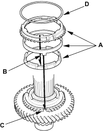
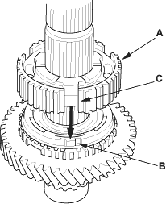
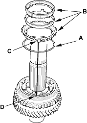
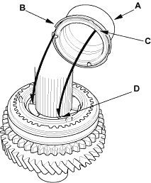

Special Tools Required
- Driver, 40 mm I.D., 07746-0030100
- Attachment, 30 mm I.D., 07746-0030300
NOTE:
- Refer to the Exploded View as needed during this procedure.
- Clean all parts in solvent, dry them and apply lubricant to all contact surfaces.
- Install the distance collar and needle bearing onto the countershaft.
- Install the triple cone synchro assembly (A) by aligning the synchro cone fingers (B) with the grooves in 1st gear (C), then install the synchro spring (D).

- Install the 1st/2nd synchro hub (A) by aligning the synchro cone fingers (B) with the grooves in 1st/2nd synchro hub (C).

- Install the reverse gear.

- Install the synchro spring (A).

- Install the triple cone synchro assembly (B) by aligning the synchro cone fingers (C) with the grooves in 1st/2nd synchro hub (D).
- Install the distance collar (A) and friction damper (B) by aligning the friction damper fingers (C) with the grooves in 1st/2nd synchro hub (D).
